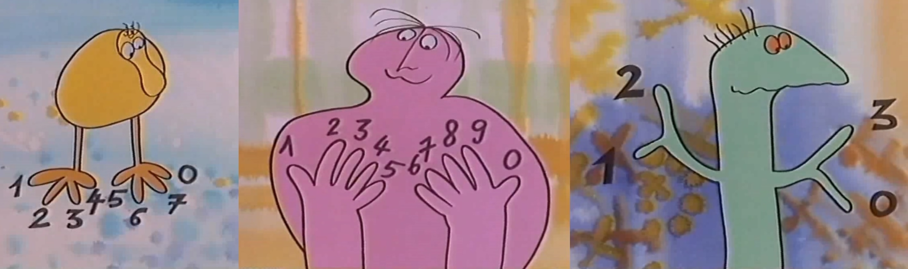

Codage de l'information
Le robot LAMA
Le robot LAMA est un véhicule sans pilote destiné à l'exploration terrestre.
Un récepteur GPS (Système de Positionnement Global) embarqué est utilisé pour déterminer la position géographique du robot.
La trajectoire du robot peut être programmée à distance, depuis un centre de contrôle et à partir de la position courante, en envoyant les coordonnées GPS, latitudes et longitudes, du parcours.
Le robot LAMA
Coordonnées GPS:
Une coordonnée de latitude représente une position terrestre sur l'axe Sud-Nord. C'est l'équateur qui définit la latitude 0°. La latitude est comptée positivement, de 0° à 90°, quand elle correspond à une position située au nord de l'équateur, et négativement, de 0° à -90°, quand elle correspond à une position située au sud de l'équateur.
Une coordonnée de longitude représente une position terrestre sur l'axe Est-Ouest. C'est le méridien de Greenwich, passant par Londres, qui définit la longitude 0°. La longitude est comptée positivement, de 0° à 180°, quand elle correspond à une position située à l'est du méridien de Greenwich, et négativement, de 0° à -180°, quand elle correspond à une position située à l'ouest du méridien de Greenwich.
Les latitudes (à gauche) et les longitudes (à droite)
On peut exprimer une coordonnée GPS, latitude ou longitude, de 3 façons différents:
- DD: Degré Décimal (ex: -160.3°),
- DM: Degré Minute (ex: 20°45.327'S),
- DMS: Degré Minute Seconde (ex: 8°55'02.0"E).
A la fin d'une coordonnée de latitude en DM ou DMS, on rajoute la lettre "N" (idem pour les Anglais) s'il s'agit d'une position située au nord de l'équateur, et la lettre "S" (idem pour les Anglais), au lieu du signe moins devant la coordonnée, s'il s'agit d'une position située au sud de l'équateur.
A la fin d'une coordonnée de longitude en DM ou DMS, on rajoute la lettre "E" (idem pour les Anglais) s'il s'agit d'une position située à l'est du méridien de Greenwich, et la lettre "O" ("W" pour les Anglais), au lieu du signe moins devant la coordonnée, s'il s'agit d'une position située à l'ouest du méridien de Greenwich.
Les coordonnées GPS d'une position géographique
Changement d'unité d'une coordonnée GPS
- Pour transformer une coordonnée en DD (ddd.aaaa°) vers une coordonnée en DM (ddd°mm.bbbb'), il faut utiliser la formule suivante: mm.bbbb = 0.aaaa × 60.
Exemple de conversion d'une longitude:
-160.3° = 160°18.0'W.
En effet 0.3 × 60 = 18, et le signe moins sur une longitude en DD indique une position à l'ouest du méridien de Greenwich.
- Pour transformer une coordonnée en DM (ddd°mm.bbbb') vers une coordonnée en DMS (ddd°mm'ss.cccc"), il faut utiliser la formule suivante: ss.cccc = 0.bbbb × 60.
Exemple de conversion d'une latitude:
20°45.327'S = 20°45'19.62"S.
En effet 0.327 × 60 = 19.62.

Exercice 1, coordonnées GPS du lycée La Fayette
Cliquez sur l'image ci-contre et, dans le nouveau site qui s'ouvre, effectuez les actions suivantes:
- Recherchez la zone géographique du lycée La Fayette à Champagne-sur-Seine (utilisez la roulette de la souris pour zoomer, et maintenez le clic du bouton gauche pour se déplacer), et cliquez dessus.
- Cliquez sur le lien avec les coordonnées GPS au format DD.
- Relevez les coordonnées GPS, au format DMS, de la position, et renseignez le questionnaire ci-dessous.
| • Lat: | ° | ' | " | |
| • Lon: | ° | ' | " |
Exercice 2, décodage de données GPS
Le centre de contrôle a récupéré les coordonnées GPS de la position actuelle du robot LAMA. La latitude, au format DMS, a été décodée, mais pas sa longitude:
- Lat: 3°04'01.9"S
- Lon: 00110011 00110111 10110000 00110010 00110001 00100111 00110010 00110000 00101110 00110011 00100010 01000101
Question 1:
Complétez le tableau ci-dessous, en utilisant les codes ASCII étendus, pour décoder la longitude:
| Longitude en binaire | Longitude |
| 00110011 | |
| 00110111 | |
| 10110000 | |
| 00110010 | |
| 00110001 | |
| 00100111 | |
| 00110010 | |
| 00110000 | |
| 00101110 | |
| 00110011 | |
| 00100010 | |
| 01000101 |
Question 2:
Cliquez sur l'image ci-contre et, dans le nouveau site qui s'ouvre, saisissez la latitude et la longitude trouvées à la question 1.
Faites une capture d'écran, en appuyant sur la touche "Impr écran", du lieu où se trouve actuellement le robot LAMA, et sauvegardez-la au format JPEG avec le logiciel Paint.
Enregistrez votre capture d'écran de la position actuelle du robot LAMA.
Exercice 3, transmission d'une nouvelle position au robot LAMA
On souhaite maintenant envoyer le robot LAMA sur le lieu des chutes Vitoria au Zimbabwe. Pour se faire, il faut lui transmettre les coordonnées GPS, en DD, suivantes:
- Lat: -17.9245
- Lon: 25.857083
Question 1:
Convertissez la latitude en DM:
| • Lat: | ° | ' |
Question 2:
Complétez le tableau ci-dessous en convertissant la latitude en DMS, et en utilisant les codes ASCII étendus pour donner les valeurs binaires, de la nouvelle latitude, à transmettre au robot :
| Latitude en DMS | Latitude en binaire |
| 1 | |
| 7 | |
Question 3:
Convertissez, en arrondissant au troisième chiffre après la virgule, la longitude en DM:
| • Lon: | ° | ' |
Question 4:
Complétez le tableau ci-dessous en convertissant la longitude en DMS, et en utilisant les codes ASCII étendus pour donner les valeurs binaires, de la nouvelle longitude, à transmettre au robot :
| Longitude en DMS | Longitude en binaire |
| 2 | |
| 5 | |
(cc) j. ahmad - Education Nationale - 2020